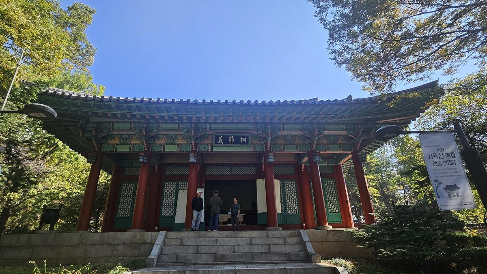
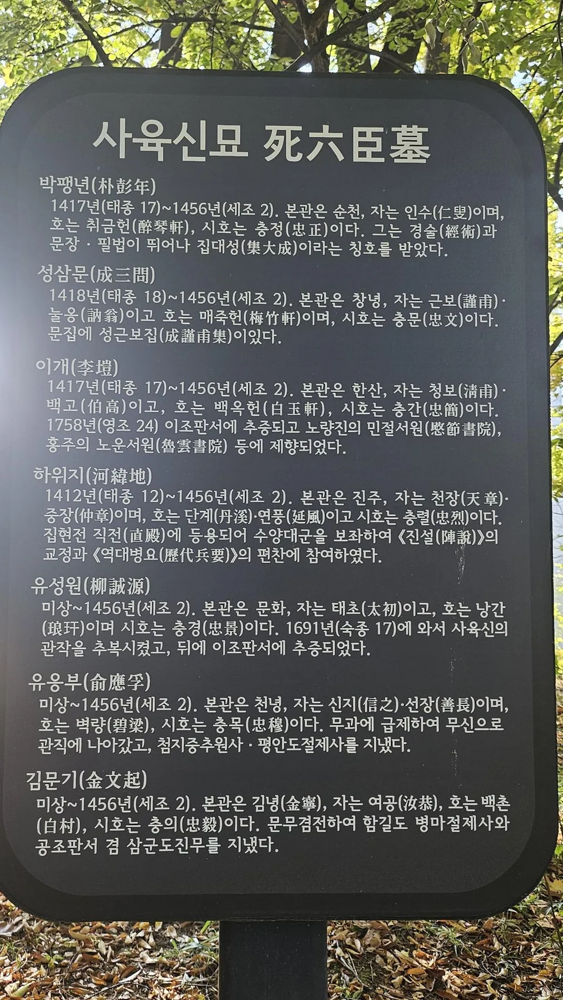
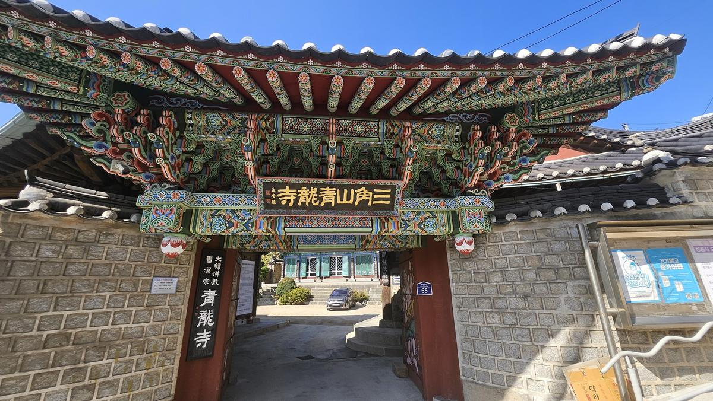
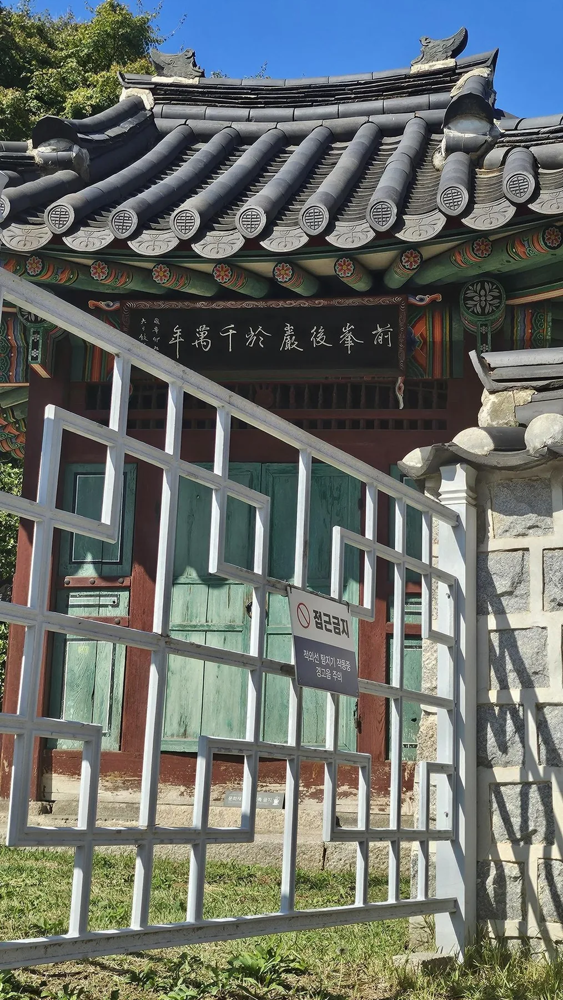
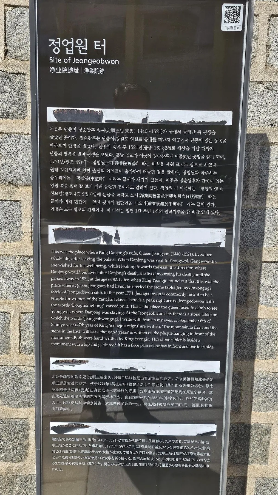
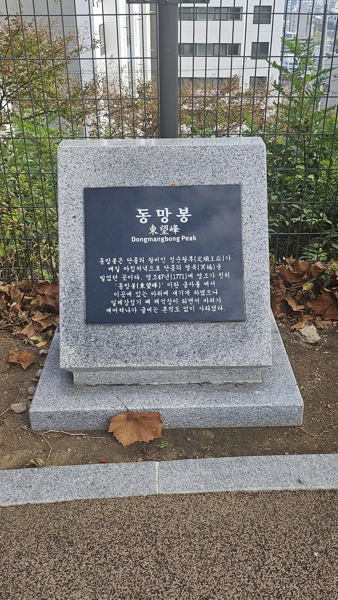

경복궁에서 만난 단종은 왕좌에 앉아 있었지만 스스로 왕권을 지키기 어려운 어린 왕이었다. 궁궐을 나온 다음에는 그 왕을 되찾으려 했던 사람들과, 끝내 그를 떠나보내고 살아야 했던 사람의 시간을 따라가 본다. 먼저 단종 복위를 도모하다 목숨을 잃은 이들을 기리는 사육신묘로 가고, 이어 정순왕후의 이야기가 남은 정업원터와 동망봉으로 향한다.
두 장소에 단종 자신은 없다. 사육신묘에는 빼앗긴 왕을 다시 세우려 했던 사람들의 선택이, 정업원터와 동망봉에는 남편을 잃은 뒤 긴 세월을 살아낸 왕비의 기억이 남아 있다. 단종의 몰락을 왕 한 사람의 비극으로만 보지 않고, 그 몰락이 주변 사람들의 삶을 어떻게 바꾸었는지 살펴보는 길이다.
오늘은 영월까지 가지 않았다. 그런데 서울의 골목과 언덕, 비각과 묘비를 따라가는 동안 계속 영월의 한 소년에게 생각이 닿았다.
한 사람은 그가 떠난 뒤에도 오래 살았다.
어떤 사람들은 그를 다시 왕으로 모시려다 삶을 잃었다.
단종이 잃은 왕좌의 크기보다, 그를 둘러싼 사람들이 ‘충’과 ‘열’과 ‘적통’이라는 이름 아래 감당해야 했던 선택과 시간이 더 무겁게 다가온 하루였다.
충신이라는 이름을 얻기까지

사육신묘에서는 다른 방식으로 단종을 놓지 않았던 사람들을 만난다. 성삼문, 박팽년, 하위지, 이개, 유성원, 유응부. 교과서에서는 한 묶음으로 외웠던 이름들이 묘역에서는 각자의 삶을 가진 사람으로 다가온다. 그런데 이번에는 ‘충신’이라는 결론을 먼저 내려놓고 그들의 선택을 다시 생각해 보았다.
이들은 1456년 단종의 복위를 도모했으나 실패했다. 오늘 우리는 이들을 충신이라 부른다. 그러나 당시 세조의 조정에서 이들은 역모 가담자였다. 그들의 관작이 공식적으로 회복된 것은 1691년 숙종 때였다.[3]
그런데 한 가지 의문이 남았다. 왜 그때였을까.
단종이 처음부터 강한 왕이었던 것은 아니다. 황표정사로 상징되듯 김종서·황보인 등 대신들의 힘이 강했던 시기에도 어린 왕의 실질적 권한은 제한적이었다. 그때 이들은 왕권을 위해 목숨을 걸지는 않았다. 그런데 단종이 왕위를 잃은 뒤에는 복위를 위해 목숨을 던졌다. 물론 그들의 내면을 오늘의 우리가 단정할 수는 없다. 그러나 이 차이는 질문을 던지게 한다. 그들이 지키려 한 것은 어린 왕의 실질적인 통치권이었을까, 아니면 ‘적통의 왕은 단종이어야 한다’는 군신의 질서였을까.
살아 있는 왕에게 힘을 만들어 주는 일보다,
왕위를 잃은 왕을 다시 왕좌에 올리는 일에 목숨을 걸었다.
오늘의 시선에서는 묘한 역설이다. 실질적인 도움보다 명분이 더 앞선 선택처럼 보이기도 한다. 그래서 나는 사육신의 충절을 폄하하기보다, 오히려 그것이 얼마나 ‘조선적인 충절’이었는지를 생각하게 되었다. 사람에 대한 충성인 동시에 왕통과 군신 관계라는 질서에 대한 충성이었던 것은 아닐까.
아니면 적통의 왕이라는 질서였을까.
여섯이라는 이름, 일곱 사람의 묘역

안내판을 읽다가 김문기의 이름에서 잠시 멈춘다. ‘사육신’이라는 이름과 현재 묘역의 인물 구성이 꼭 일치하지 않기 때문이다. 이곳은 처음부터 지금 모습으로 만들어진 묘역이 아니다.
원래 전해 오던 네 묘에 1977~1978년 정비 과정에서 하위지와 유성원의 가묘가 더해졌다. 김문기를 사육신에 포함할 것인가를 둘러싼 논의도 있었으며, 이후 기존 사육신의 구성은 유지하면서 김문기를 함께 기리는 방식이 자리 잡았다.[4]
따라서 현재의 봉분을 모두 같은 시기에 조성된 무덤으로 읽어서는 안 된다. 묘역에는 1456년의 사건과 더불어, 오랜 세월 이름을 전하고 추모의 공간을 정비해 온 과정이 함께 담겨 있다.
누군가는 이름을 전했고, 누군가는 묘를 돌보았고, 또 누군가는 함께 기려야 할 사람을 이야기했다. 오늘의 묘역은 그 여러 시간 위에 서 있다.
궁궐 밖, 왕비의 시간이 남은 곳

정업원터 주변에는 집과 담장, 전선과 기와가 한 풍경 안에 들어온다. 궁궐을 떠난 왕비의 이야기가 일상의 공간에 남아 있다는 것이 먼저 눈에 들어온다. 이곳에서는 왕비의 격식을 보여 주는 건물보다, 왕비의 자리를 잃은 뒤에도 이어졌던 삶을 생각하게 된다.
1454년 단종의 왕비가 된 송씨는 이듬해 남편이 왕위에서 물러나는 일을 겪었다. 1457년에는 단종이 노산군으로 강등되어 영월로 떠났고, 같은 해 세상을 떠났다. 정순왕후는 그 뒤에도 1521년까지 살았다. 두 해 사이에 놓인 시간은 64년이다.[1]
단종의 생애를 읽고 책장을 넘긴 뒤에도,
정순왕후의 하루는 계속되었다.
그 긴 세월을 모두 ‘그리움’이라는 말 하나로 설명할 수 있을까. 남편을 잃은 슬픔과 함께 매일을 살아 내야 하는 일이 있었을 것이다. 단종과 함께 왕과 왕비로 지낸 시간은 불과 몇 년이었지만, 정순왕후는 그 뒤 60년 넘게 더 살았다.
비각 앞에서 읽은 후대의 기억

앞산 뒷바위 천만년을 가오리.현장 안내판이 풀이한 비각 현판 ‘前峯後巖於千萬年’
현판의 글씨는 1771년 영조가 남겼다. 정순왕후가 세상을 떠나고도 오랜 시간이 흐른 뒤, 또 다른 왕이 이곳에 그의 사연을 새겼다. 눈앞의 비각은 정순왕후의 생애뿐 아니라, 그 생애를 기억하려 했던 후대의 마음도 전한다.

다만 장소의 전승과 당시의 기록은 구분해 읽을 필요가 있다. 현장 안내판은 정순왕후가 이곳에서 여생을 보냈다고 설명한다. 한편 한국민족문화대백과사전은 당시 정업원이 창덕궁에서 멀지 않은 도성 안에 있었으며, 영조가 민간의 구전을 따라 현재 위치에 비를 세웠다고 설명한다.[2]
이 차이는 답사의 또 다른 질문이 된다. 오늘 우리가 찾아온 곳은 정순왕후의 삶이 전해지는 자리이면서, 후대 사람들이 그를 기억할 장소로 삼은 자리다. 안내판과 비각을 함께 읽으면 그 두 시간이 겹쳐 보인다.
동쪽을 바라본다는 것

동망봉에는 정순왕후가 올라 영월 쪽을 바라보며 단종의 명복을 빌었다는 이야기가 전한다. 표석에는 영조가 쓰게 했던 ‘동망봉’ 바위 글씨가 일제강점기 채석으로 사라졌다는 설명도 있다. 기억을 남기려 한 바위는 없어졌고, 오늘은 표석이 그 사연을 대신 전한다.
높은 곳에서 바라본 서울에는 집과 아파트가 빽빽하다. 이 풍경에서 영월을 찾아낼 수는 없다. 정순왕후가 바라보았다는 동쪽도 눈으로 남편을 확인할 수 있는 방향은 아니었을 것이다. 다만 그가 있는 곳을 향해 몸을 돌릴 수는 있었으리라.
한 사람은 한양에서 영월을 바라보았다고 전한다. 함께 산 날보다 헤어진 뒤의 세월이 훨씬 길었다.
아직 영월의 답사는 남아 있다. 오늘은 이 문장을 서울에 남겨 둔다. 훗날 청령포에서 한양을 향한 단종의 이야기를 만날 때, 두 장소를 다시 이어 볼 수 있을 것이다.
왕의 몰락, 남겨진 사람들의 시간
정업원터의 비각과 사육신묘의 봉분은 서로 다른 모습을 하고 있다. 한쪽에는 남편을 떠나보낸 사람의 긴 생애가, 다른 한쪽에는 빼앗긴 왕을 되찾으려 했던 사람들의 선택이 남아 있다.
정순왕후가 생전에 되찾지 못했던 왕후의 지위는 1698년에야 회복되었다.[5] 지금 우리가 익숙하게 부르는 ‘단종’, ‘정순왕후’, ‘충신’이라는 이름에는 이렇게 긴 시간이 들어 있다.